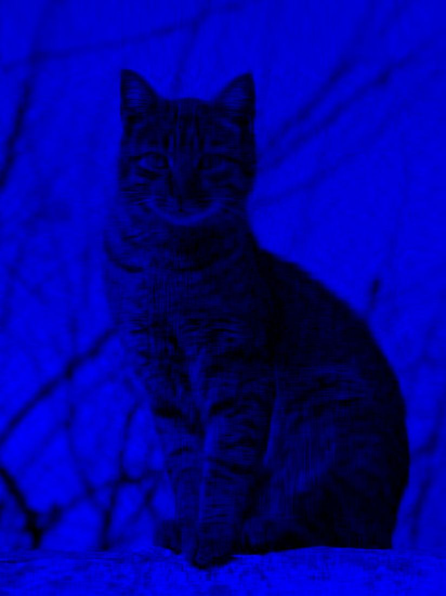

Numerical methods · 2022 – Present
SVD image compression
Low-rank image approximation with a truncated singular value decomposition, applied to each color channel.
- Python
- NumPy
- OpenCV
- Linear algebra


Overview
The script splits an image into its blue, green and red channels, decomposes each with NumPy's SVD, keeps only the largest k = 40 singular values and recombines the channels. A rank-40 approximation stores a small fraction of the numbers in the original matrix while keeping the image's main structure.
It also writes each channel and its compressed version next to the full-color result, so the effect of truncation can be compared channel by channel.
- Role
- Design and implementation
- Timeline
- 2022 – Present
- Focus
- Numerical methods
- Tools
- Python, NumPy, OpenCV, Linear algebra
Highlights
- Splits an image into blue, green and red channels and decomposes each with SVD.
- Keeps only the largest 40 singular values per channel, then recombines them.
- Saves each channel before and after compression so the effect of truncation is visible.
Source code
ShowHide image_compression.py63 lines
import numpy as np
import cv2
import os
# Run relative to this file. If you change the file, add it in the same place as the placeholder.
os.chdir(os.path.dirname(os.path.abspath(__file__)))
# Image Pre-Processing
# Generic image, any image works.
img_path = "cat.jpg"
k = 40 # Compression Factor
# Load image and split rgb
img_bgr = cv2.imread(img_path)
b, g, r = cv2.split(img_bgr)
h, w = img_bgr.shape[:2]
# Create rgb images
blue_img = np.zeros((h,w,3), dtype='uint8')
blue_img[:,:,0] = b
green_img = np.zeros((h,w,3), dtype='uint8')
green_img[:,:,1] = g
red_img = np.zeros((h,w,3), dtype='uint8')
red_img[:,:,2] = r
cv2.imwrite("blue.jpg", blue_img)
cv2.imwrite("green.jpg", green_img)
cv2.imwrite("red.jpg", red_img)
cv2.imwrite("uncompressed.jpg", cv2.merge([b, g, r]))
# Image Compression Algorithm
# This algorithm applies an SVD decomposition to the images,
# and truncates at the largest singular values. For a better
# understanding of how this algorithm works, see:
# https://en.wikipedia.org/wiki/Singular_value_decomposition
def compress(arr, k):
U, S, Vt = np.linalg.svd(arr, full_matrices=False)
compressed_image = np.dot(U[:, :k], np.dot(np.diag(S[:k]), Vt[:k, :]))
return np.clip(compressed_image, 0, 255).astype(np.uint8)
# Compress each colorway and recombine + save
b_comp = compress(b, k)
g_comp = compress(g, k)
r_comp = compress(r, k)
blue_compressed = np.zeros((h,w,3), dtype='uint8')
blue_compressed[:,:,0] = b_comp
green_compressed = np.zeros((h,w,3), dtype='uint8')
green_compressed[:,:,1] = g_comp
red_compressed = np.zeros((h,w,3), dtype='uint8')
red_compressed[:,:,2] = r_comp
cv2.imwrite("blue_compressed.jpg", blue_compressed)
cv2.imwrite("green_compressed.jpg", green_compressed)
cv2.imwrite("red_compressed.jpg", red_compressed)
cv2.imwrite("compressed.jpg", cv2.merge([b_comp, g_comp, r_comp]))
Run it
python image_compression.pyInstall dependencies with pip install -r requirements.txt from the Projects repository.